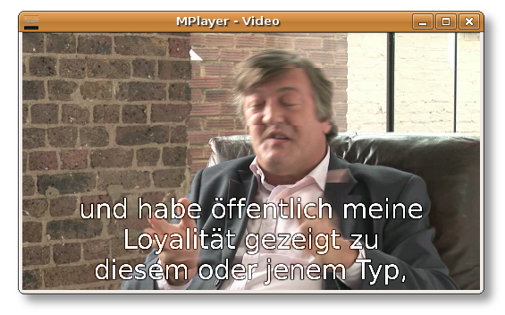

Umbenennen der nachstehenden Dateien (optional)
Es ist ziemlich einfach, also lassen Sie uns loslegen! Dieses Anleitung setzt MPlayer voraus, wenn Sie Totem, Xine, VLC oder Kaffeine verwenden, haben wir ebenso Hilfe für Sie.
Alle Anweisungen gelten für GNU/Linux-Systeme. Wenn Sie Windows oder Mac OS X einsetzen, sollten Sie diese auch gelten – aber wir wissen es nicht.
Sobald beide Dateien heruntergeladen sind, stellen Sie sicher, dass sie im selben Ordner sind und die Dateinamen übereinstimmen.
Zum Beispiel können der Film in fry.ogv und der Untertitel in fry.srt umbenannt werden.
Nun öffnen Sie den Film einfach in MPlayer. Die Untertitel sollten eingeblendet werden.
Klicken Sie auf „OK“, und der Film wird wiedergegeben…
